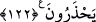

değildir. Bilakis, himmetin tesiri daha kuvvetlidir. Nice niyetler vardır ki amelden daha
hayırlıdır. Bu hususta, akl-ı selîm sahibi insanlar için açık şâhidler vardır.
Son iki âyetin işârî yorumu şöyledir: “Medine halkına” Kalb Medine’sine, nefs ve
hevâdan oluşan halkına “ve onların çevresinde bulunan” nefsânî ve kalbî sıfatlardan
oluşan “bedevî Araplar’a Allah’ın Rasûlü’nden” rûh rasûlünden “geri kalmaları ve
onun canından önce kendi canlarını düşünmeleri” o fenâ fillâh ile kendi varlığını feda
ederken onların kendi varlıklarını fedâ etmekten geri durmaları “yakışmaz.” Çünkü ruh
rasûlü Allah’a dönücü ve O’na seyr hâlindedir (seyr ilallah).
İşte onların Allah yolunda” Allah’ı taleb uğrunda şehvetlerin suyundun “bir
susuzluğa,” çeşitli mücâhedeler sebebiyle “bir yorgunluğa ve” lezzetlerden ve dünya
malından kesilmek sebebiyle “bir açlığa dûçar olmaları, kâfirleri” nefis ve hevâ
kâfirlerini “öfkelendirecek bir yere” fenâ makamlarından bir makama “ayak basmaları
ve düşmana” şeytan, dünya ve nefs düşmanına “karşı bir başarı kazanmaları,” bela,
sıkıntı, fakr, mahrumiyet, zahmet, hüzün ve bunlar gibi “fenâ fillâh” sebeblerini elde
etmeleri “ancak bunların karşılığında kendilerine” fenâ fillah miktarınca bakâ
billahdan “sâlih bir amel yazılması içindir. Çünkü Allah güzel davrananların”
Allah’da fânî olanların “mükâfâtını zâyi etmez.” Müşahede üzere kendisine ibadet
etmeleri için onları Allah ile bâkî kılar. Çünkü “İhsân Allah’a O’nun gürüyormuşsun
gibi ibadet etmendir.”[326]
“Küçük, büyük bir masraf yapmaları,” -küçük olan kendi sıfatlarını, büyük olan ise
kendi zâtını Allah Teâlâ’nın sıfatlarına ve zâtına fedâ etmektir-; dünya, âhiret, nefs,
heva, kalp ve ruh vâdilerinden “bir vâdiyi geçmeleri, mutlaka onların lehine” bu
vâdilerden her birini geçmeleri sebebiyle onlara mutlaka bir kurbet (Allah katında
yakınlık), bir menzile ve bir derece “yazılır” Nitekim Allah (bir kudsî hadiste): “Bana
bir karış yaklaşana, ben bir kulaç yaklaşırım.”[327] buyurmuştur. “ki Allah onları,
yaptıklarının en güzeliyle” nefislerinden fenâ karşılığında onları Allah ile bakâ
makamıyla, Allah’ı talep ederken kullukta bulundukları makamın en güzeliyle
“mükâfatlandırsın.” Çünkü onların talebleri, ma’rifetleri ve gözlerinin bakışı kadardır.
Allah’ın mükaafatını onların akıl ve idrakleri kavramaktan âciz kalır. Nitekim Allah
Teâlâ (bir kudsî hadiste): “Sâlih kullarım için gözlerin görmediği, kulakların
duymadığı, hiçbir beşerin hatırına bile gelmedik şeyler hazırladım...”[328]
buyurmuştur. et-Te’vîlâtü’n-Necmiyye’de bu şekilde geçmektedir.